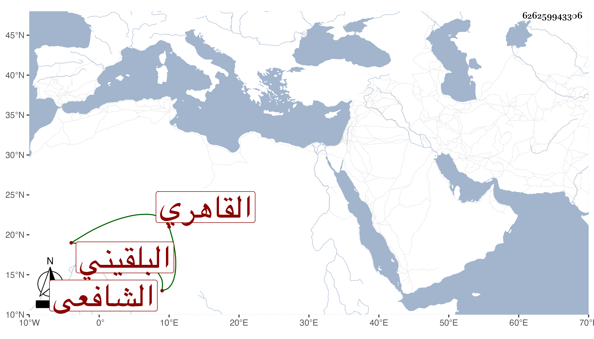

0902Sakhawi.DawLamic.ITO20230111-ara1.EIS1600.626259943306
Biography ID: 626259943306
رسلان بن أبى بكر بن رسلان بن نصير بن صالح البهاء أبو الفتح الكنانى البلقيني ثم القاهري الشافعى ابن أخى السراج عمر وأخو أحمد وجعفر ومحمد . ولد سنة ست وخمسين وسبعمائة واشتغل في الفقه كثيرا ومهر وشارك في غيره وناب في الحكم وتصدى للتدريس والافتاء ، وانتفع الناس به في جميع ذلك . قال ابن حجى كان من أكابر العلماء وحمدت سيرته في القضاء ، زاد غيره وكان كثير المنازعة لعمه في إعتراضاته على الرافعى ، مع الوقار وحسن الخلق والشكل . مات في أواخر جمادي الأولى سنة ثلاث عن سبع وأربعين سنة وكثر التأسف عليه . ذكره شيخنا في أنبائه وقال في ترجمة أبيه من سنة ثلاث وسبعين إنه مهر وأفتى ودرس وناب في الحكم وكان شكلا حسنا كثير النفع للطلبة مع التواضع والتودد وهو أول إخوته وفاة وهو في عقود المقريزي .
